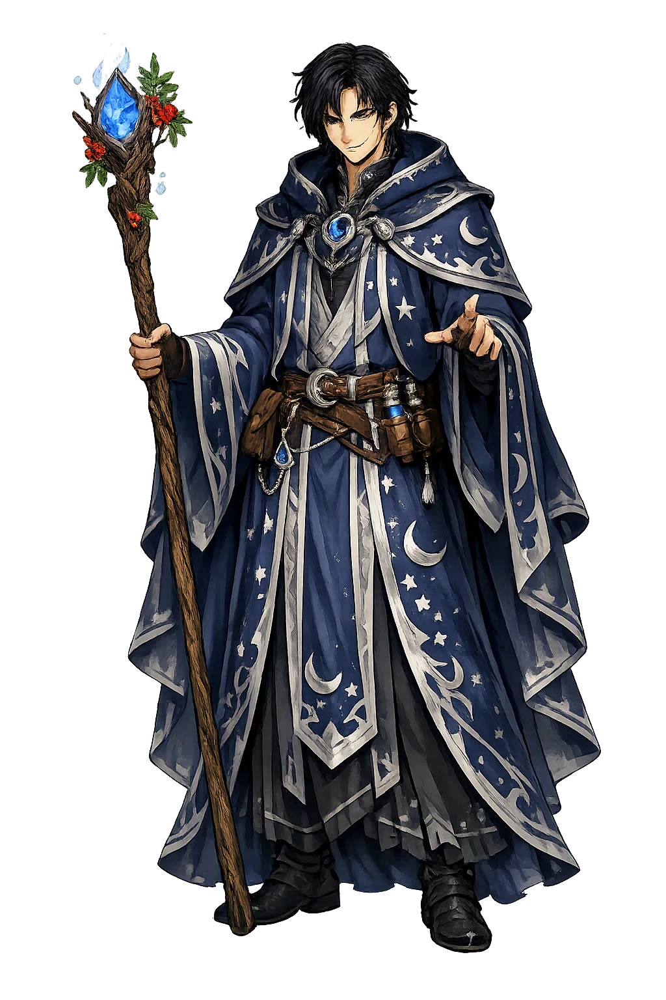
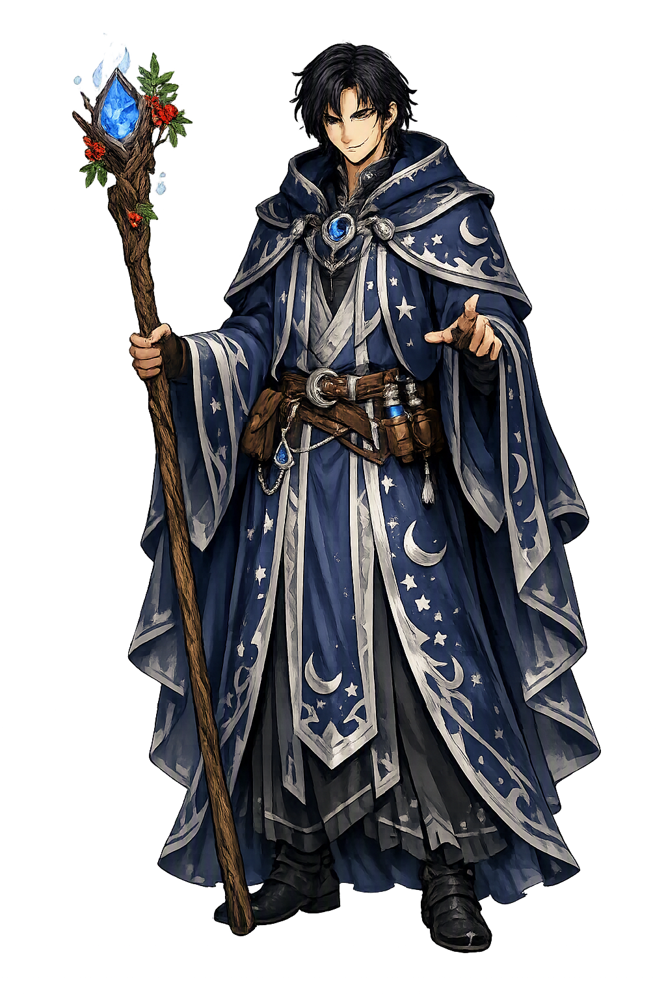

Unicode restoration and ASCII comparison
Gwydion
The name survives in scholarly transliteration. Gwydion is the standard Celtic romanisation, documented in academic sources — “Born of trees”. Because the spelling uses only Latin letters, the form is the same in both ASCII and Unicode.
No indigenous writing system is securely attested for individual celtic names. The form shown is a modern scholarly transliteration.
gwydion
The plain gwydion form is identical to the Unicode restoration. Because this name is already written in Latin letters, no diacritics, stress, or script information were lost — only capitalization differs.
Gwydion
The Unicode restoration does not need to recover lost marks for Gwydion. Its value is canonical spelling and consistent cataloguing, not the reconstruction of erased orthography. The domain is readable as-is to both DNS and humanity.
Gwydion.com → gwydion.com
The non-ASCII characters in Gwydion are encoded while the ASCII remains visible. To the DNS, it is Punycode. To humanity, it is Gwydion.
How Gwydion is preserved in writing
No indigenous writing system is securely attested for individual celtic names. The form shown is a modern scholarly transliteration.
Contribute scholarly provenance →Owned, ideal, and ASCII forms of Gwydion
Gwydion
The full Unicode restoration. gwydion.com is not in the PuniCodex collection — it is watched for release; if it drops, this temple upgrades to an owned flagship.
How Gwydion was spoken
The domain of Gwydion
In the celtic tradition, Gwydion governed magic, craft, vengeance. The name encodes a sphere of power that shaped ritual, narrative, and social order.
Disguised as a poet, Gwydion conjured illusory stallions, hounds, and shields to trade for Pryderi's otherworld pigs — the first swine in Wales — and started a war with a vanishing herd.
The wand that transformed Gwydion and Gilfaethwy into deer, boars, and wolves for three years — and that later struck Lleu from eagle back into man.
With Math, Gwydion fashioned Blodeuwedd from the flowers of oak, broom, and meadowsweet — a wife made by craft for the man no earthly wife was allowed.
When Lleu was struck into eagle-shape, Gwydion followed a sow to the oak, sang three englynion to bring him down, and turned vengeance into restoration.
Stories of Gwydion
Gwydion fab Dôn is the enchanter of the Fourth Branch of the Mabinogi, 'Math fab Mathonwy': nephew of Math the king of Gwynedd, brother of Gilfaethwy, and the foremost magician of medieval Welsh literature. He is poet, trickster, foster-father, and avenger in one figure — the man who makes illusions that pass for wealth, who pays for his crimes in animal skins, and who ends the tale as the careful hand that puts a broken world back into shape.
King Math of Gwynedd could live only with his feet in the lap of a virgin, except in time of war, and the maiden Goewin held that office. When Gilfaethwy desired her, Gwydion devised the remedy: war. He went to Pryderi of Dyfed in the guise of a poet and asked for the swine — the hobeu, the first pigs ever brought to Wales, a gift from Arawn of Annwfn. Refused, he conjured twelve stallions with golden harness, twelve greyhounds with golden collars, and twelve golden shields, and traded the apparitions for the herd. By the time Pryderi's glamour faded, Gwydion was gone, and Pryderi came north with an army.
While Math marched to meet him, Gwydion and Gilfaethwy forced Goewin. At the peace-talks Pryderi demanded single combat, 'for it was because of me that the hosts came'; at Maenor Penard, the tale says, Gwydion slew him 'by strength and valour and by magic and enchantment', and Dyfed went home under tribute. The victory is real and so is its cost: Gwydion's finest trick is also his crime, and the Fourth Branch never lets the two be separated.
Math's justice is the strangest in the Mabinogi. He struck Gwydion and Gilfaethwy with his magic wand and turned them into a stag and a hind, and sent them into the wild for a year; when they returned with a fawn, he made them a boar and a sow for the second year, and a wolf and a she-wolf for the third. Each year their offspring — Hyddwn, Hychddwn Hir, and Bleiddwn — were sent to the court, baptized, and raised.
After the third year Math struck them back into their own shapes: 'You have had punishment enough, and you have been greatly shamed.' The punishment is exact and even-handed — the brothers suffer in the flesh what they did, and when the debt is paid the king takes them back into honour. It is the Fourth Branch's doctrine of justice in miniature: transformation as sentence, restoration as mercy.
When Gwydion proposed his sister Arianrhod as Math's new footholder, she stepped over the wand for the virginity test and dropped a yellow-haired boy — Dylan, who made for the sea — and 'something small' that Gwydion hid in a chest at the foot of his bed. From the chest came the boy who would be Lleu. Gwydion fostered him, and Arianrhod, shamed, laid three tynghedau upon him: he should have no name until she named him, no arms until she armed him, and no wife of any race then on earth.
Gwydion undid the destinies by craft. Disguised as a shoemaker with the boy at his side, he came beneath Caer Arianrhod, and when Lleu flung a stone and knocked a wren's leg askew, Arianrhod cried that the fair one had struck it with a skilful hand — and so named him Lleu Llaw Gyffes. For the arms, Gwydion conjured a phantom fleet against the castle until Arianrhod herself armed the defenders. The magician wins not by force but by arranging the world so that his opponent speaks the words he needs.
For the third tynged there was no earthly answer, so Gwydion and Math took their wands and made one: from the flowers of the oak, the broom, and the meadowsweet they fashioned the fairest woman anyone had seen, and named her Blodeuwedd, 'Flower-face'. She married Lleu — and betrayed him with Gronw Pebr of Penllyn, drawing from her husband the secret of how he could be killed, so that Gronw's spear struck him at the impossible meeting of conditions. Lleu flew off in the shape of an eagle, screaming.
Gwydion searched Gwynedd and Powys until he followed a sow to an oak where rotten flesh and maggots fell to her snout, and in the top of the tree sat the eagle. He sang three englynion down the years of the bird's perches until Lleu came to his knee, then struck him with the wand back into human shape — skin and bone, a man to be nursed back with doctors and good care. The vengeance that followed was as crafted as the rescue: Blodeuwedd he would not kill, but turned into an owl, 'the shape hated by all the birds', renamed Blodeuwedd, 'Flower-face' become 'Owl'; and Gronw, standing where Lleu had stood, took Lleu's spear-cast through the slab at Llech Gronw and died. Maker of the woman, finder of the man, instrument of the sentence: the whole of Gwydion's domain is in this last movement.
Outside the Mabinogi, the Book of Taliesin preserves Gwydion's other great fame: Kat Godeu, 'The Battle of the Trees', in which he enchants the trees of the forest to march as an army against Arawn of Annwfn — alder at the front, oak in the thick of it. The poem's voice, Taliesin, boasts that he was there when Gwydion 'made the sally of the trees'. In the later tale-tradition around the poem, Gwydion also guesses the hidden name of the opponent's champion from the alder twigs in his hand — the same gift of naming-by-craft that the Fourth Branch shows in the wren scene. Whether the poem preserves older myth or learned fancy is debated, but its Gwydion is unmistakably the Mabinogi's: the magician whose weapons are other things' natures.
Gwydion is what a culture makes of cleverness when it refuses to call cleverness innocent. His illusions win a war and buy a rape; the tale answers by putting him, for three years, into the bodies of beasts, one year for each shape of the debt. But the same hands that tricked a king out of his swine later coax a dying god out of a tree, one verse at a time, and the same wand that punishes him he is finally trusted to hold. The Fourth Branch's calm is that magic and justice are one craft: to know the true shape of a thing — a name, a name-day, a wound, a woman made of flowers — is to be able to change it, and to be answerable for the change. Gwydion is the enchanter who learns, and teaches, that power over forms is a form of responsibility.
Enter Extended Lore